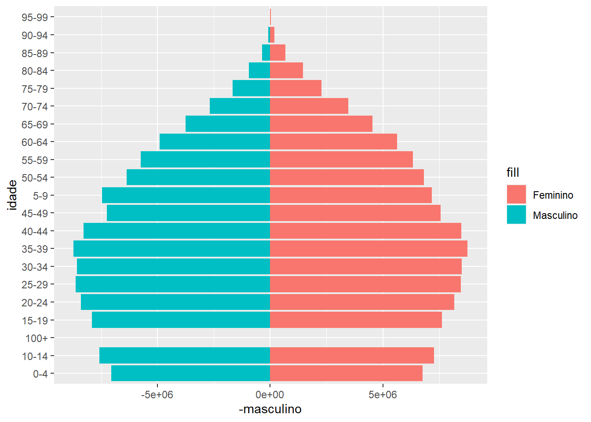
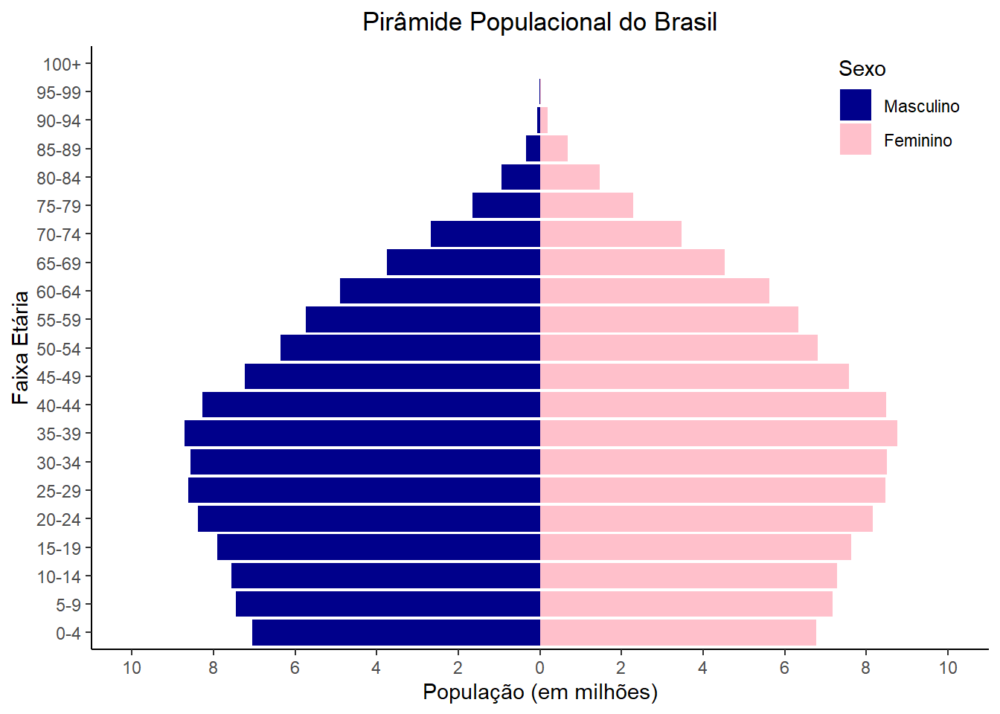

Profº Dr. Anderson Ara Aluno: GRR20233881 – Raymundo Eduardo Pilz 12/09/2023
DESAFIO 2
ESCOLHA UM GRÁFICO NÃO USUAL, NÃO VISTO NO CURSO DE ESTATÍSTICA BÁSICA OU NÃO VISTO ATÉ O MOMENTO NO CURSO DE VISUALIZAÇÃO.
EM UMA FOLHA A4, FRENTE:
CONSTRUA O GRÁFICO ESCOLHIDO ATRAVÉS DE PROCEDIMENTOS SIMPLES (SEM CRITÉRIOS DE VISULIZAÇÃO);
CONSTRUA ESSE MESMO GRÁFICO COM CRITÉRIOS DE VISUALIZAÇÃO;
TENTE EXPLICAR O MÁXIMO POSSÍVEL DOS DADOS, UTILIZANDO LEGENDAS, TÍTULOS E/OU SUBTÍTULOS.
NA MESMA FOLHA A4, VERSO:
INSIRA OS CÓDIGOS E/OU PROCEDIMENTOS UTILIZADOS PARA CONSTRUÇÃO DE AMBOS OS GRÁFICOS;
INSIRA SEU NOME E A DATA DA CONSTRUÇÃO.
GRÁFICO NÃO-CONVENCIONAL
Gráfico de pirâmide populacional simples
# Carregando bibliotecaslibrary(ggplot2)# Dados extraídos de: https://www.populationpyramid.net/pt/brasil/2023/#google_vignetteidade <-c('0-4', '5-9', '10-14', '15-19', '20-24', '25-29', '30-34', '35-39', '40-44', '45-49','50-54', '55-59', '60-64', '65-69', '70-74', '75-79', '80-84', '85-89', '90-94', '95-99', '100+')masculino <-c(7048276, 7458718, 7571355, 7902645, 8388853, 8626910, 8573161, 8715312, 8275450, 7230207,6355937, 5736755, 4904223, 3748986, 2675453, 1653264, 944483, 350303, 72217, 8207, 396)feminino <-c(6766804, 7165577, 7280500, 7624131, 8159904, 8465096, 8495865, 8753351, 8478260, 7571613,6814563, 6331430, 5625694, 4534686, 3467790, 2283019, 1459935, 677986, 193494, 29591, 2036)# Criando um data framedados <-data.frame(idade, masculino, feminino)# Gráficografico1 <-ggplot(dados, aes(x = idade)) +geom_bar(aes(y =-masculino, fill ="Masculino"), stat ="identity", position ="identity") +geom_bar(aes(y = feminino, fill ="Feminino"), stat ="identity", position ="identity") +coord_flip()grafico1

GRÁFICO CONVENCIONAL
Gráfico de pirâmide populacional (dados extraídos em: https://www.populationpyramid.net/pt/brasil/2023/#google_vignette)
# Carregando bibliotecaslibrary(ggplot2)# Dados extraídos de: https://www.populationpyramid.net/pt/brasil/2023/#google_vignetteidade <-c('0-4', '5-9', '10-14', '15-19', '20-24', '25-29', '30-34', '35-39', '40-44', '45-49','50-54', '55-59', '60-64', '65-69', '70-74', '75-79', '80-84', '85-89', '90-94', '95-99', '100+')masculino <-c(7048276, 7458718, 7571355, 7902645, 8388853, 8626910, 8573161, 8715312, 8275450, 7230207,6355937, 5736755, 4904223, 3748986, 2675453, 1653264, 944483, 350303, 72217, 8207, 396)feminino <-c(6766804, 7165577, 7280500, 7624131, 8159904, 8465096, 8495865, 8753351, 8478260, 7571613,6814563, 6331430, 5625694, 4534686, 3467790, 2283019, 1459935, 677986, 193494, 29591, 2036)# Convertendo a população para milhõesmasculino <- masculino /1000000feminino <- feminino /1000000# Criando um data frame para armazenar os dadosdados <-data.frame(idade, masculino, feminino)# Criando índice para ordenar o eixo xdados$indice <-1:length(idade)# Manipulando eixo y, definindo intervalo de exibição do eixo ybrks =c(-10, -8, -6, -4, -2, 0, 2, 4, 6, 8, 10)# Criando o gráficografico2 <-ggplot(dados, aes(x =reorder(idade,indice))) +geom_bar(aes(y =-masculino, fill ="Masculino"), stat ="identity", position ="identity") +# com o sinal "-" para que essas informação apareçam no lado esquerdo do gráficogeom_bar(aes(y = feminino, fill ="Feminino"), stat ="identity", position ="identity") +scale_fill_manual(values =c("Masculino"="darkblue", "Feminino"="pink"),breaks =c("Masculino", "Feminino"), # ordem dos itens na legendalabels =c("Masculino", "Feminino")) +# rótulos na legendalabs(title ="Pirâmide Populacional do Brasil", # Título do graficox ="Faixa Etária", # eixo x, no final será invertidoy ="População (em milhões)", # eixo y, no final será invertidofill ="Sexo") +scale_y_continuous(breaks = brks, # inserindo o intervalo definidolimits =c(-10, 10), # inserindo o limite do intervalo para que as colunas tenham o mesmo comprimento de ambos os ladoslabels =abs(brks)) +# Resolvendo o problema de valores negativos em masculinotheme_classic() +# inserindo tema para auxiliar na impressao do graficocoord_flip() +# virando os eixos do gráfico, para transformar em um gráfico de piramidetheme(legend.position =c(0.9, 0.9), # Legenda no canto superior direitoplot.title =element_text(hjust =0.5)) # Centraliza o títulografico2

O presente trabalho foi desenvolvido na matéria do 2º período (2023) da disciplina de CE303 – Visualização de Dados Aplicada, ministrada pelo professor Anderson Ara pela Universidade Federal do Paraná (UFPR)